నేను పెరిగింది నేటి తెలంగాణలో — అప్పట్లో అది ఉమ్మడి ఆంధ్రప్రదేశ్. దసరా, సంక్రాంతి, వేసవి సెలవుల్లో అమ్మమ్మ వాళ్ళ ఊరికి బస్సు ప్రయాణాలే నా చిన్నతనపు జ్ఞాపకాలు. బస్ స్టాండ్లో రెండు కొనేవాడిని: ఒక పాప్కార్న్ ప్యాకెట్, ఒక కొత్త చందమామ. మిగతా ప్రయాణమంతా ఆ పుస్తకమే.
I grew up in what is now Telangana, when it was still undivided Andhra Pradesh. My clearest childhood memories are bus journeys to my grandparents' village — and at the bus stand, always the same two purchases: a packet of popcorn and the latest Telugu Chandamama. The magazine made the rest of the journey disappear. This site exists to keep that feeling, not just the pages: you pick an issue at the stall, a ticket gets punched, and you read as the countryside rolls past the window, one kilometre per page, until you reach అమ్మమ్మ ఊరు.
పూర్తిగా. ప్రకటనలు లేవు, ఖాతాలు లేవు, ట్రాకింగ్ లేదు. ఎప్పటికీ ఉండవు.
Completely. No ads, no accounts, no tracking — and it will stay that way. It costs you nothing and earns me nothing.
No. Not the name, the stories, the art, or the scans. I am just someone who loved reading it on a bus. The only thing made here is the reading experience around the pages — the stall, the ticket, the milestone. If you hold rights to Chandamama and object to this site, open an issue and it comes down immediately, no argument.
Chandamama stopped printing in 2013, and scans of old issues have circulated among readers ever since — the quiet preservation work of people who couldn't bear to lose it. This site collects such scans and gives them a way to be read, not just stored. Nothing is altered: pages appear exactly as scanned, ink smudges and all.
అవును. iPhone: Safari లో Share ⬆︎ → “Add to Home Screen”. Android: Chrome ⋮ → “Add to Home screen”. తర్వాత చందమామ ఐకాన్ నుంచి తెరిస్తే పూర్తి తెరపై, యాప్ లాగే ఉంటుంది.
Yes — add it to your home screen and it opens fullscreen like a native app, with your reading position remembered per issue.
The bus you board matches the year you travel to. A 1947 issue rides a slow, rattling bus through sepia countryside behind a single-tone horn; a 1990 issue gets the warm, slightly faded colors of that decade; a 2012 issue rides the bus as it is today. Only the world outside the window changes — the magazine pages always show their true colors.
లక్ష్యం: 1947 నుంచి 2012 వరకు — 65 సంవత్సరాల చందమామ. సంచికలు దొరికినప్పుడల్లా స్టాల్లో వేలాడతాయి.
The goal is the full Telugu run, 1947 to 2012. Issues are added in batches as good scans are found; the stall grows a string at a time.
Tell me on GitHub — a broken page, a feature idea, or an issue you'd love to see added next.
Everything here is handmade: the palm trees and electric poles are drawn in SVG, the bus horn and engine rumble and page rustle are synthesized in the browser (no recordings), the APSRTC ticket is CSS, and the whole site is plain HTML — no frameworks, nothing tracking you. Pages are WebP images served from Vercel; the code lives on GitHub.
The site was designed and built in conversation with Claude, Anthropic's AI — the bus stand, the era-tinted journeys, the milestone counting down to అమ్మమ్మ ఊరు, all of it argued into shape one memory at a time, in Telugu and English. The memories are mine; much of the craft is Claude's; the magazine, forever, is Chandamama's.